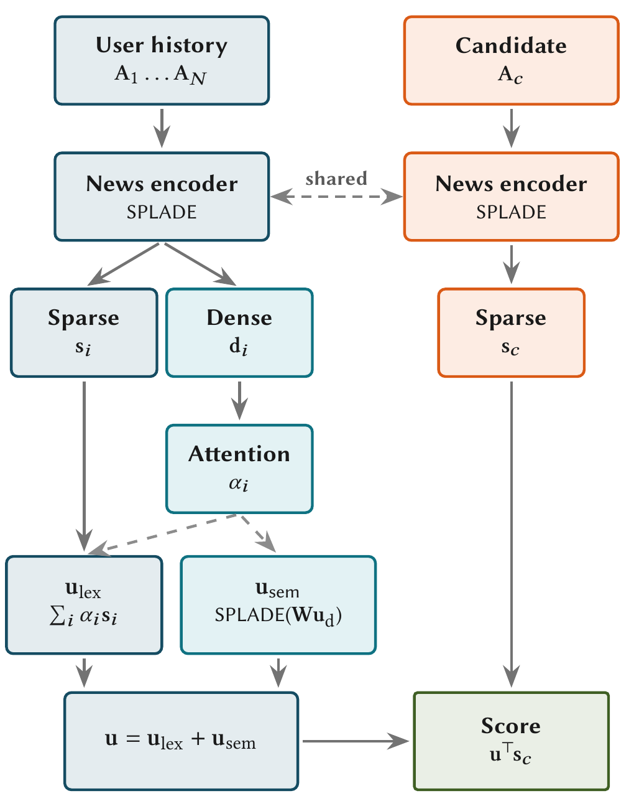

BrowseFlow 是一个生成式用户模拟器，它把目标从“复刻日志里那一次浏览”改成“学会这类浏览结果的分布”。同一个用户面对同一页推荐，这次可能刷到第 20 条点了两件，下次刷到第 8 条就走了，日志只记下其中一次。BrowseFlow 只用两样东西描述一次浏览：刷到多深，以及在哪几个位置点击。模型先随机生成这次刷到第几条，再在这个范围内用一种逐个插入点击的生成方式决定点击落在哪些位置，而不是一步步预测大量的下滑动作。在淘宝真实推荐日志做成的数据集上，衡量生成分布和真实分布差距的 energy score 从最好基线的 0.10847 降到 0.07264；点击次数分布和真实分布之间的 Wasserstein 距离从 0.2595 降到 0.0697。做用户模拟器和离线评估的团队值得读。
它到底在解决什么问题？
用户模拟器的用途，是在不上线的情况下回答“换一种推荐，用户会怎么刷”。它必须生成完整的浏览过程：往下滑、点击、点赞、离开。现有做法大多一步一步预测：下一个动作是滑、点还是走。
这样做有两个问题。第一，日志只是一次抽样。同一个用户、同一页推荐，结果本来就是随机的，下面这张表是一个示意：
| 第几次（示意） | 刷到第几条 | 点击了哪些位置 |
|---|---|---|
| 第 1 次 | 20 | 5、14 |
| 第 2 次 | 8 | 3 |
| 第 3 次 | 12 | 无 |
日志里可能只有第 1 次。模拟器如果只拿“和日志有多像”来评，就会被鼓励每次都输出第 1 次，看不出它给第 2、3 次分配的概率对不对。
第二，点击太稀。论文统计的三个数据集里，浏览动作里点击或点赞只占 1.52% 到 5.96%，淘宝数据是 5.48%，其余几乎都是往下滑。一步步预测时，绝大多数训练目标都是“往下滑”，点击这种真正有用的信号分到的监督很少。生成时还有连锁反应：中途错误地预测了“离开”，后面本该发生的点击就再也生成不出来。

整体流程：先定深度，再插点击

流程分三步：
- 把一次浏览改写成两样东西：最终刷到的深度，以及按顺序排好的点击列表，每个点击记下发生在第几条、点的是哪件商品。滑动动作不再单独建模，给定深度和点击列表，中间的滑动可以直接还原。
- 用一个模型读用户画像、历史行为和整页推荐，给每个可能的深度打一个概率，从中抽一个深度。
- 把这个深度之后的商品遮住，在深度以内从空列表开始一个个插入点击，插完就得到一次完整的浏览。
关键的分工是：深度模型负责“刷多远”的随机性，插入过程负责“点几次、点在哪”。下面拆开讲。
为什么要先抽深度？
深度决定了用户能看到哪些商品，点击只能发生在看到的商品上。先抽深度，后面生成点击时就有一个硬约束：不会出现刷到第 8 条就走了、却点了第 14 条的情况。
深度模型的输出是一个概率分布，而不是一个数。还是上面的例子，模型可能给深度 8 分 30%、12 分 25%、20 分 20%（示意）。每次模拟都从这个分布里重新抽，同一个用户自然会刷出不同的长度。论文在分组分析里拿它和深度误差最小的基线 UserSim（一个逐步生成动作的模拟器）比：短会话上两者误差差不多，越长的会话差得越多，UserSim 倾向于把长会话估短。
点击怎么一个个插进去？
这一步用的是离散的 flow matching，可以理解为一个“逐步补全”的过程：从空列表出发，每一小步决定要不要插入一个点击、插在已有点击的哪两个之间、插在第几条、点的是哪件商品。生成时把补全进度从 0 到 1 均分成 32 段，进度走到 1 时留下的就是最终的点击列表。点几次不需要单独预测，插了几次就是几次。
训练时怎么教它补？拿一条真实日志的点击列表，比如在第 5 条和第 14 条各点了一次（示意）。随机选一个进度 ，每个真实点击以概率 保留、以 删掉，得到一个残缺列表。 时，可能只剩第 14 条那次。模型要学的是：在这个残缺列表上，还缺哪些点击、各自应该插在哪。 越接近 1，剩下要补的越少。 Hoot 说

示意：真实日志在第 5 条和第 14 条各点了一次。BrowseFlow 的训练是随机删点击再让模型补回来。损失里管强度的两项 (1−s)λ − R·log λ 画出来是一条 U 形曲线，最低点在 λ = R/(1−s)。缺 1 次、进度 0.5 时是 2，平均等待 1/2 = 0.5；缺 2 次、进度 0.2 时是 2.5，平均等待 0.4。所以强度学到的就是“剩下的进度里平均还要插几次”。 出处: 示意例子，对应论文式 16 的插入损失
论文把“下一小步插入多少个、插哪个”拆成一个总强度乘一个分配：
总强度和分配由同一个网络算出，输入有五样：用户历史、遮掉深度以外商品属性的推荐列表（两部分先各自用 Transformer 编码好，整个插入过程中不变）、抽到的深度、当前已有的点击列表（每次插入后重新编码），以及补全进度 。 是这一步总共插入点击的强度，管“还要不要继续插、插多少”； 把强度分给各个合法的插入位置， 包含插在哪两个点击之间、第几条、哪件商品。合法位置只包括深度以内、还没被点过的商品，所以生成结果天然满足曝光约束。
训练时，删掉的真实点击直接变成这两项的监督目标。设残缺列表比真实列表少了 个点击，插入部分的损失是
其中含 的两项，让总强度乘上剩余进度 之后接近缺失点击的个数 ：还缺得多，就插得快（论文式 16）。含 的一项，让分配把概率放到每个真实缺失点击 对应的插入位置上。深度模型另用普通的分类损失，按日志里的真实深度训练，两部分损失相加一起训（论文式 14、15）。
32 段里的每一段，先抽一个等待时间，它服从以总强度 为速率的指数分布，平均等待是 ，所以强度越大，等待越短。等待时间落在这一段剩余时长之内，就按分配抽一个插入并加进列表，然后用新列表重算强度，再抽下一次等待；等待超出这一段，就进入下一段。所以一段里可能插零个，也可能插好几个。某一段里没有合法位置或者强度为 0，就结束这一段；后面的段照常进行，因为强度会随进度变化。
为什么不按浏览顺序从前往后生成？消融里，同样用 flow matching、但新点击只能加在列表末尾的版本，点击次数分布差距是 0.09407，允许插在中间的版本降到 0.06969。插入允许把新点击放到已生成的两个点击之间；用深度加点击列表表示时，这种插入让点击次数分布更接近真实，energy score 几乎不变。
用什么尺子评？
既然结果是随机的，评估就不能只看和日志有多像。论文用 energy score，先要定义两条浏览结果的距离：在淘宝数据上，把整段浏览编码成 401 个格子：前 400 格按浏览顺序记录每一步动作（继续刷，或者点了哪件商品），没走到的格子统一填空白，最后一格记录在哪里结束。两条结果逐格对比，不一样的格子占比越高，距离越大；在快手和 AdSERP 上，逐位置比有没有点赞或点击。然后对每个场景生成 K 条模拟结果，得分是“K 条模拟结果到真实日志的平均距离”减去“模拟结果两两之间的距离总和除以 K(K−1)”，越小越好：
是真实日志， 是第 条模拟结果， 是上面定义的距离。第二项被减掉，所以模拟结果之间有差异反而加分。这个评分按期望来看有一个好性质：在大量场景上平均，只有生成分布和真实分布一致时得分最低，总是输出同一种结果或者乱生成，平均分都会变差。另一把尺子是点击次数分布的差距（论文叫 Count W1）：把所有场景里真实的点击次数和模拟的点击次数各自做成累计分布（点击不超过 0 次、1 次、2 次……的比例），在每个次数上取两条累计比例之差的绝对值，再全部加起来，越小越接近。
结果说明了什么
三个数据集：淘宝真实推荐日志做成的 TaobaoBrowse（训练集 10 万条），快手的点赞数据 KuaiRand-Like，以及搜索结果页的点击数据 AdSERP。TaobaoBrowse 是论文新发布的基准：它同时保留了真实推荐页、逐条的下滑轨迹和点击目标，现有公开数据集（如快手的 KuaiRand）都缺少逐条的曝光轨迹。对比的六个基线里，有两个搜索里常用的经典点击模型，按用户有没有看到这一条、看到后点不点来建模；UserSim、KuaiSim 等是一步步生成动作的模拟器。
| 数据集 | 指标 | 最好的基线 | BrowseFlow |
|---|---|---|---|
| TaobaoBrowse | energy score | 0.10847（DBN，经典点击模型） | 0.07264 |
| TaobaoBrowse | 点击次数分布差距 | 0.2595（UserSim） | 0.0697 |
| KuaiRand-Like | 点击次数分布差距 | 0.0363（CaseRec） | 0.0207 |
| KuaiRand-Like | energy score | 0.02736（UserSim） | 0.02703 |
| AdSERP | energy score | 0.15218（RL4RS-DIEN） | 0.14271 |
| AdSERP | 点击次数分布差距 | 0.4626（UserSim） | 0.1215 |
点击次数分布上，改写表示加插入式生成的作用很大：淘宝数据上这项差距只剩最好基线的约四分之一。energy score 则要分开看：消融里最朴素的版本（完整动作序列、逐步生成）在淘宝数据上已经是 0.07815，好于所有基线，表示和插入只把它再降到 0.07264，这部分优势从哪来论文没有拆开；快手数据上 energy score 只提升约 1%，论文也承认整体分布的改进较小。另一面，TaobaoBrowse 上 BrowseFlow 的 AUC 是 0.6126，只比 UserSim 高，低于其余五个基线（最高是 RL4RS-DIEN 的 0.6592）；快手和 AdSERP 上则接近最好。BrowseFlow 没有专门优化单个位置的点击判断。单个位置判断得准，不等于整次浏览的分布学得对，这两种能力要分开评。
消融把两件事拆开看。只改表示、仍用普通的逐步自回归生成，点击次数分布差距从 0.45158 降到 0.38071；只换成 flow matching、仍用一步步的动作序列，降到 0.12666。稀疏表示和 flow matching 都用、再允许插入，降到 0.06969。在完整动作序列上做插入反而崩到 2.56907；论文没给原因，一个可能的解释是在大量滑动动作之间插入，结构太容易乱。所以插入只有配合稀疏表示才有用。
我认为它的局限
第一，每个数据集只有一种关键事件：淘宝和 AdSERP 是点击，快手是点赞。电商里加购、收藏、购买往往同时存在，插入过程还要决定事件类型，我认为难度会明显上升。
第二，推荐列表是固定的。模拟时整页推荐事先给定，用户刷到哪里、推荐系统都不会根据前面的点击换内容。真实信息流是边刷边加载、边推荐的，这种交互模拟器还接不上。
第三，局部判断能力偏弱。TaobaoBrowse 上 AUC 0.6126，低于六个基线中的五个，如果下游用途是逐条估计点击率，BrowseFlow 不是更好的选择。
一个推荐团队可以怎么试
- 先只换评估尺子。在现有模拟器上，对同一批场景多次采样，算 energy score 和点击次数分布差距，看现有模拟器是否总在复刻日志、几次采样几乎一样。
- 再只换表示：把浏览改写成深度加点击列表，深度用一个分类模型预测，点击仍用现有方法生成。消融显示这一步就有收益，成本最低。
- 有效之后再上插入式生成，重点看点击次数分布，尤其是“一次都没点”的比例是否接近真实。
- 最后拿模拟器做离线策略评估，检查它对两个推荐策略的排序，是否和这两个策略线上 A/B 的方向一致，这才是模拟器真正的用处。
结论
最值得带走的一点：用户模拟器该学的是一页推荐下各种可能结果的分布，评估也要能看出这一点。BrowseFlow 用“深度加点击列表”的表示和插入式生成做到了，代价是淘宝数据上逐条判断的 AUC（0.6126）低于六个基线中的五个。
| 维度 | 评价 |
|---|---|
| 问题重要性 | 中高。模拟器是离线评估和强化学习推荐的基础，只复刻日志的模拟器会给出过于确定的结论 |
| 方法创新性 | 中高。把浏览改写成深度加点击列表、用插入式 flow matching 生成，在用户模拟里是新的组合 |
| 实验证据 | 中。三个数据集、六个基线，消融清楚；没有验证模拟器对线上策略排序的预测能力 |
| 工程成本 | 中。表示改写简单，flow matching 的训练，以及分 32 段、每次插入后都要重算的生成过程需要额外实现 |
| 是否值得尝试 | 值得。先换评估尺子，看清现有模拟器的分布有多偏；再试稀疏表示，它成本低，收益有消融支持 |
读完这篇，你觉得
夜读鸮记下了，谢谢你的反馈。
点一下即可，无需登录；再点一次撤回。只统计匿名次数，不记录你是谁。
相关论文RELATED
 Embodied · 2026-10-27Coupling Execution Horizon and Sampling Depth in Flow-Matching VLA Policies这篇论文发现，基于流匹配的视觉语言动作模型里，求解动作的迭代步数和每次执行的动作步数是耦合的，最优选择还会反转。这类模型从一段随机噪声出发，用数值求解一步步把它推成一段平滑的动作。部署时通常把两者分开调：执行步数用来摊薄推理延迟，迭代步数则保持很高以求精确。频繁重新规划时，迭代步数少确实更差；一次执行很长一段动作时，迭代步数少反而更好，因为粗略求解让动作更集中在平均轨迹附近，减少了开环执行中误差的累积。每次只执行 5 步时，迭代 10 步更好。每次执行 20 步时，迭代 2 步反而更好。这个规律在多个基准和真机上都成立，不用训练就能降延迟、提成功率。
Embodied · 2026-10-27Coupling Execution Horizon and Sampling Depth in Flow-Matching VLA Policies这篇论文发现，基于流匹配的视觉语言动作模型里，求解动作的迭代步数和每次执行的动作步数是耦合的，最优选择还会反转。这类模型从一段随机噪声出发，用数值求解一步步把它推成一段平滑的动作。部署时通常把两者分开调：执行步数用来摊薄推理延迟，迭代步数则保持很高以求精确。频繁重新规划时，迭代步数少确实更差；一次执行很长一段动作时，迭代步数少反而更好，因为粗略求解让动作更集中在平均轨迹附近，减少了开环执行中误差的累积。每次只执行 5 步时，迭代 10 步更好。每次执行 20 步时，迭代 2 步反而更好。这个规律在多个基准和真机上都成立，不用训练就能降延迟、提成功率。
Personalization · 2026-10-20LSNR: Learned Sparse News Recommendations with Attentive User Modeling把读过的文章分别编码，再学习哪些文章更重要，可以避免长历史被截断。LSNR将词项加权与用户级语义扩展合并成稀疏向量，在MIND上的NDCG@10比稀疏基线STAR高约11%。 Personalization · 2026-09-10Task-Blind No MORE: Multi-Task Information Flow in Unified Ranking Backbones多任务精排里，常见的统一骨干让所有任务共用前面每一层，只在最后的预测塔才分开，点击和深聊这类差别很大的目标被迫共享同一套中间表示。陌陌的这篇论文在骨干里放一组随层更新的小向量，几个由所有任务共用，每个任务再各有一个。每个任务的小向量从第一层起就用自己的注意力参数读行为历史，彼此之间用掩码隔开，避免互相串信号。离线七个任务都超过三种统一骨干，两周线上实验里使用时长提升 3.0%。
Personalization · 2026-09-10Task-Blind No MORE: Multi-Task Information Flow in Unified Ranking Backbones多任务精排里，常见的统一骨干让所有任务共用前面每一层，只在最后的预测塔才分开，点击和深聊这类差别很大的目标被迫共享同一套中间表示。陌陌的这篇论文在骨干里放一组随层更新的小向量，几个由所有任务共用，每个任务再各有一个。每个任务的小向量从第一层起就用自己的注意力参数读行为历史，彼此之间用掩码隔开，避免互相串信号。离线七个任务都超过三种统一骨干，两周线上实验里使用时长提升 3.0%。
讨论
欢迎补充实验细节、复现经验或不同看法。需 GitHub 登录。
正在加载讨论…